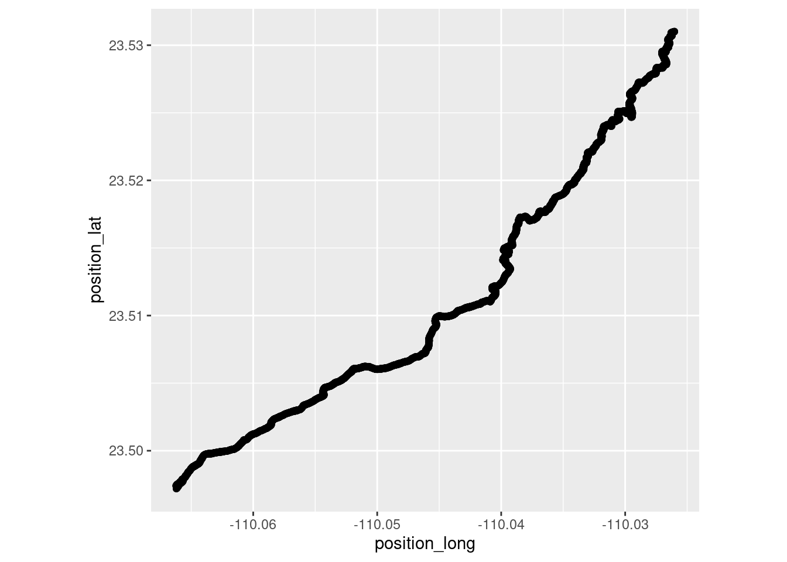
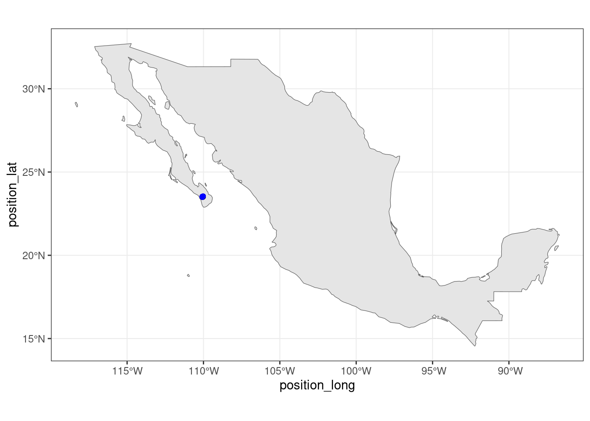
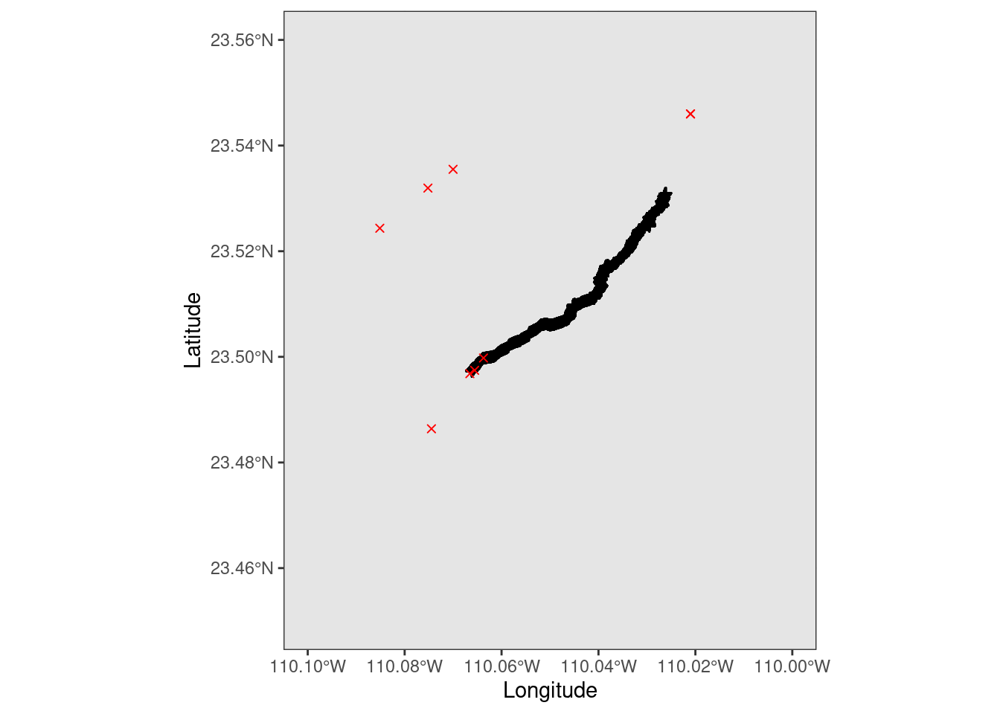
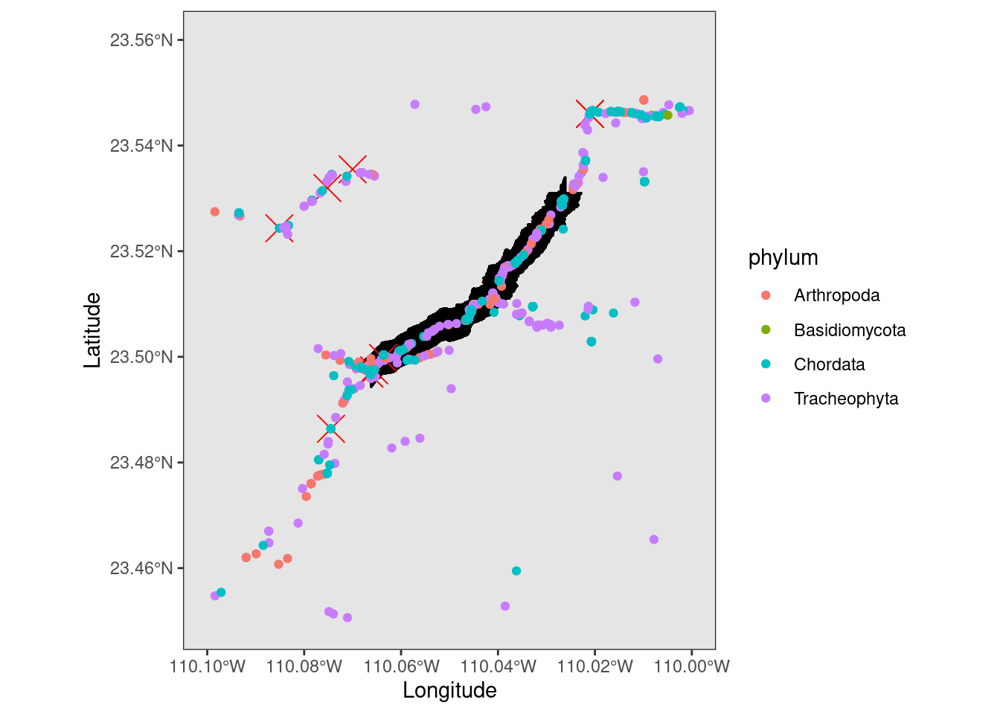

library(rgbif)
library(sf)
library(tidyverse)
library(rnaturalearth)
library(rnaturalearthdata)

Introduction
I hiked in the Sierra de la Laguna National Park in Baja California Sur. The region is a biodiversity hotspot as very old mountains rise out of the sea above 6000’ elevation. There are a number of endemic species in this range. My previous posts were about the Caracara and the Cardon cacti. Below is a quick data visualization of the out and back hike we did along with some publicly available species observations.
Load the libraries
Infile the hiking data and make a plot.
hike_data <- read.csv("~/DATA/data/baja-hike.csv")
hike_plot1 <- ggplot(hike_data, aes(x = position_long, y = position_lat)) +
coord_quickmap() + geom_point()
hike_plot1
By taking the Latitude and Longitude limits of the hike, we can create a polygon to filter observations only falling within that shape.
baja_geometry <- paste('POLYGON((-110.1 23.45, -110.00 23.45, -110.00 23.55, -110.1 23.55, -110.1 23.45))')Pull in some observations of our new Caracara friends.
caracara <- occ_data(scientificName = "Caracara plancus", hasCoordinate = TRUE, limit = 10000,
geometry = baja_geometry )
caracara_coords <- caracara$data[ , c("decimalLongitude", "decimalLatitude",
"individualCount", "occurrenceStatus", "coordinateUncertaintyInMeters",
"institutionCode", "references")]Subset world maps for Mexico. Plot the hiking data and publically available Caracara observations.
world_maps <- ne_countries(scale = "medium", returnclass = "sf")
mexico <- subset(world_maps, name == "Mexico")
theme_set(theme_bw())
ggplot(data = mexico) +
geom_sf() +
geom_point(data = hike_data, aes(x = position_long, y = position_lat), color = 'black') +
geom_point(data = caracara_coords, aes(x = decimalLongitude, y = decimalLatitude), color = 'blue')
Zoom into the hiking region by changing the coordinate limits in the coord_sf() arguments.
# zoom in
ggplot(data = mexico) +
geom_sf() +
geom_point(data = hike_data, aes(x = position_long, y = position_lat), color = 'black', shape = 3) +
geom_point(data = caracara_coords, aes(x = decimalLongitude, y = decimalLatitude), color = 'red', shape = 4) +
coord_sf(xlim = c(-110.1, -110.0), ylim = c(23.45, 23.56), expand = TRUE) +
xlab("Longitude") + ylab("Latitude")
Beautiful!
Now to see a random sampling of what other species are also in the area of the hike.
species <- occ_data(hasCoordinate = TRUE, limit = 1000,
geometry = baja_geometry )
species_coords <- species$data[ , c("scientificName","phylum", "order", "family", "decimalLongitude", "decimalLatitude",
"individualCount", "occurrenceStatus", "coordinateUncertaintyInMeters",
"institutionCode", "references")]Plot the hike data, Caracara data, and other species data on the same map. I changed the size of the hiking and Caracara points so they are easier to see. I also just plotted things by Phylum as to not overload the plot.
ggplot(data = mexico) +
geom_sf() +
geom_point(data = hike_data, aes(x = position_long, y = position_lat), color = 'black', size = 5, shape = 3) +
geom_point(data = caracara_coords, aes(x = decimalLongitude, y = decimalLatitude), color = 'red', size = 6, shape = 4) +
geom_point(data = species_coords, aes(x = decimalLongitude, y = decimalLatitude, color = phylum)) +
coord_sf(xlim = c(-110.1, -110.0), ylim = c(23.45, 23.56), expand = TRUE) +
xlab("Longitude") + ylab("Latitude")
You can see that there are various species to explore representing Arthropods (Insects, Spiders etc.), Cordates (Animals), Bisidomycota (fungi), and Tracheophyta (vascular plants). Also, a majority of the observations are on the trail itself. This shows one of the main limitations of this publicly available data, that it is not randomly collected. That is of course not to say it is not useful! It is still very useful. A lot to explore in another post!